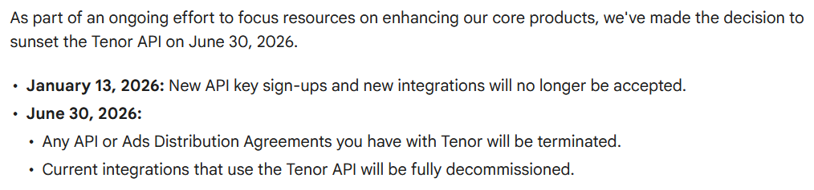

Tenor has announced the discontinuation of the Tenor API service for app developers. The service is planned to be deprecated on June 30, 2026. Discord is preparing to implement an experiment to change the default GIF search provider to Giphy and Klipy. The experiment is set to help determine which one users prefer more.

↺ Update (June 30, 2026): Tenor API fully discontinued
The Tenor API has been fully decommissioned. Discord has decided to transition to Klipy as their new GIF search provider.